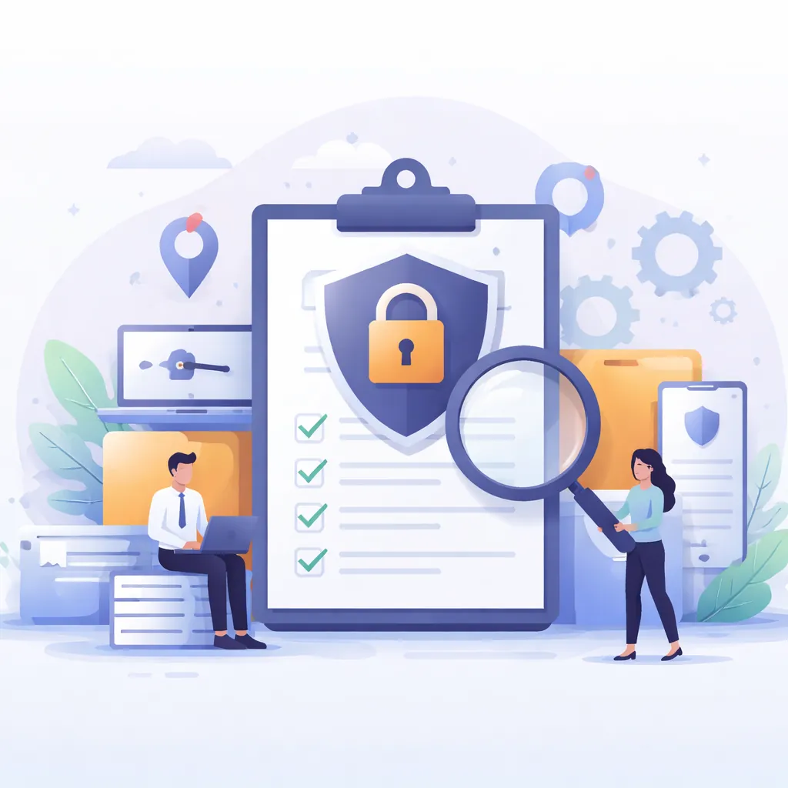

개인정보 영향평가 절차: 단계별 실무 가이드

이는 제가 최근 몇 년 간 실무하면서 겪은 경험에서부터 출발합니다. 어느 날, 팀장님께서 새로운 온라인 서비스 런칭을 앞둔 상황에서 개인정보 보호가 최우선 과제라는 점을 강조하셨습니다. 그때 제가 맡은 일은 개인정보 영향평가(PIA)를 실시하여 예상되는 위험 요인을 분석하고 대처 방안을 마련하는 것이었습니다.
단계 1: 범위 설정과 기초 데이터 수집
처음에 해야 할 일은 평가 대상 프로젝트의 정확한 범위를 설정하는 것입니다. 이 과정에서 실무자들이 놓치기 쉬운 점은 서비스의 모든 부분을 평가할 필요 없이, 개인정보와 직간접적으로 관련된 부분에 초점을 맞춰야 한다는 것입니다. 범위 설정이 잘못되면 이후 과정이 혼란스러워질 수 있습니다.
평가 범위가 정해지면, 관련 데이터와 정보 수집이 필요한데요. 이와 관련해서 외부 전문가 컨설팅을 받는 경우도 있습니다만, 내부적으로도 해당 시스템의 데이터 흐름을 철저히 분석할 수 있어야 합니다. 이를 위해 DFD(Data Flow Diagram)와 같은 도구를 활용하면 도움이 됩니다. 데이터를 최대한 구체적으로 수집하는 것이 중요하죠.
단계 2: 위험 분석 및 평가
다음으로 해야 할 일은 수집한 데이터를 바탕으로 위험 요인을 분석하는 것입니다. 사실 이 단계가 가장 시간과 노력이 들어갔던 기억이 납니다. 왜냐하면 단순한 표면적 위험이 아니라, 개인정보 노출이나 오용의 잠재적 트리거까지 꼼꼼히 살펴야 하기 때문입니다.
가령, 특정 기능에서 입력받는 개인정보가 내부적으로 어떻게 처리되고 저장되는지, 외부로 전송될 때 어떤 보안 조치가 취해지는지를 면밀히 검토합니다. OWASP 같은 보안 가이드라인을 참고하되, 기업의 고유한 환경에 맞춘 맞춤형 분석이 필요합니다.
단계 3: 위험 완화 대책 설계
분석 결과를 토대로 리스크를 완화하기 위한 실질적 대책을 세워야 합니다. 예를 들어, 데이터 암호화 강화나 접근 통제 권한 조정 같은 기술적 조치를 고려합니다. 이 과정에서는 예산이나 기술적 한계 때문에 모든 대책을 한꺼번에 도입하기 어려운 경우가 생기기 마련입니다. 따라서 우선순위를 정하고 단계별로 대처 방안을 제시하는 것이 필요합니다.
이후 단계에서는 팀원들과의 논의를 통해 여러 대안 중 가장 적절한 방법을 선택합니다. 예산, 시간이 제한된 상황에서는 현실적으로 가능한 조치를 중점적으로 실시하는 것이 중요합니다.
단계 4: 검토와 보완
마지막으로 필요한 것은 이러한 대책들이 실제 효과를 발휘하는지를 검증하는 것입니다. 이는 그저 문서로 끝내지 않고 반복적인 검토 과정을 거쳐야 합니다. 서비스를 실제 운영 중에도 지속적인 모니터링과 피드백 수집이 중요하며, 정기적으로 업데이트가 필요합니다.
결국, 개인정보 보호란 단순한 체크리스트가 아니라 끊임없이 변화하는 상황에 발맞추어 조정해야 하는 일이라는 점이 다시금 강조됩니다. 실무자는 항상 예측 불가능한 새로운 리스크와 마주할 준비가 되어 있어야 합니다. 이러한 접근이 바로 개인정보 보호의 핵심이라 생각합니다.
ℹ️ 이 글은 생성형 AI로 작성되었습니다. 대표 이미지도 AI로 생성했습니다. 법령·수치·일정 등은 관계 기관의 원문(법령, 고시, 보도자료)으로 확인하시기 바랍니다.